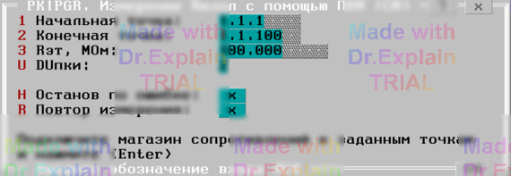

4.5 PKIPGR. Измерение R с помощью ПКИ (СИ)
Утилита определяет погрешность измерения сопротивления командой СИ. Эта погрешность является также погрешностью сравнения сопротивления изоляции с заданной уставкой ПКИ.
Предоставляется меню (см. рисунок 1).

Опции меню:
- Начальная точка и Конечная точка — входы АСК для подключения выводов магазина эталонных сопротивлений;
- Rэт, МОм — величина эталонного сопротивления;
-
DUпки — номер диапазона измерения, соответствующий напряжению контроля БН:
- 1 – 5 В;
- 2 – 30 В;
- 3 – 100 В;
- 4 – 250 В;
- 5 – 499 В.
После ввода параметров меню автоматически выполняются следующие действия:
- Включается КЗШ;
- Начальная точка подключается к шине A1;
- Конечная точка подключается к шине B1;
- Отключается КЗШ;
- Производится измерение сопротивления — перебор уставок ПКИ по методу поразрядного взвешивания.
В протокол выводятся сообщения вида:
$TST1 Rд.б=100 МОм±10.00% Rизм=99.95 МОм Погр=-0.05%
$TST1 Измерений:1 Все норма ПОГРmin=-0.05% ПОГРmax=0
По окончании теста отображается итоговое меню (см. п. 6.3).